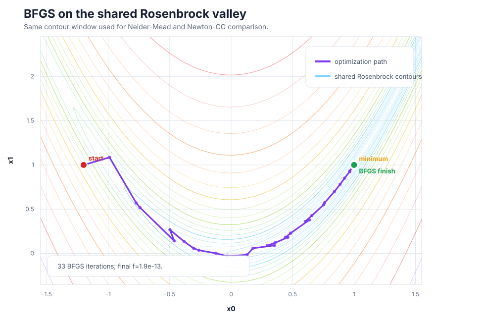
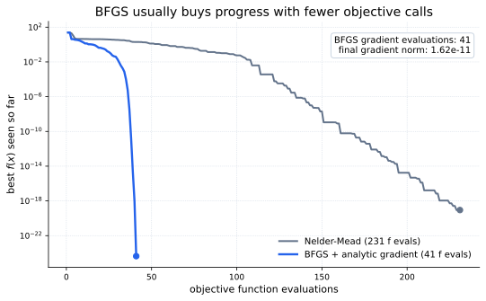

Core Idea
Newton's method would step with the inverse Hessian:
BFGS keeps the Newton shape but replaces the true inverse Hessian with an approximation \(H_k\). The search direction is \(p_k=-H_k\nabla f(x_k)\), and a line search chooses the step length \(\alpha_k\).
The BFGS Update
After one step, BFGS compares the displacement in parameter space with the displacement in gradient space:
The inverse-Hessian approximation is then updated by the rank-two formula
This update satisfies the secant condition \(H_{k+1}y_k=s_k\). When \(y_k^\mathsf{T}s_k>0\), it also preserves a positive-definite \(H_k\), so the search direction remains downhill.
Rosenbrock Example
For the \(N\)-variable Rosenbrock function
the interior gradient terms are
The endpoint derivatives are


Using SciPy
In SciPy, use method="BFGS" and pass the gradient through
jac. If jac is omitted, SciPy estimates the
gradient by finite differences.
import numpy as np
from scipy.optimize import minimize
def rosen(x):
return np.sum(100.0 * (x[1:] - x[:-1]**2.0)**2.0 + (1 - x[:-1])**2.0)
def rosen_der(x):
xm = x[1:-1]
xm_m1 = x[:-2]
xm_p1 = x[2:]
der = np.zeros_like(x)
der[1:-1] = 200 * (xm - xm_m1**2) - 400 * (xm_p1 - xm**2) * xm - 2 * (1 - xm)
der[0] = -400 * x[0] * (x[1] - x[0]**2) - 2 * (1 - x[0])
der[-1] = 200 * (x[-1] - x[-2]**2)
return der
x0 = np.array([1.3, 0.7, 0.8, 1.9, 1.2])
result = minimize(
rosen,
x0,
method="BFGS",
jac=rosen_der,
options={"disp": True},
)
print(result.x)When To Use It
| Use BFGS when | Prefer another method when |
|---|---|
| The objective is smooth and a gradient is available or cheap to estimate. | The number of variables is very large; storing a dense \(H_k\) can become expensive. |
| You want a strong default local optimizer without writing Hessian code. | The objective is noisy or nonsmooth enough that gradient differences become misleading. |
| The problem is unconstrained and moderate-sized. | You can provide Hessian-vector products for a large problem; Newton-CG or trust-krylov may scale better. |